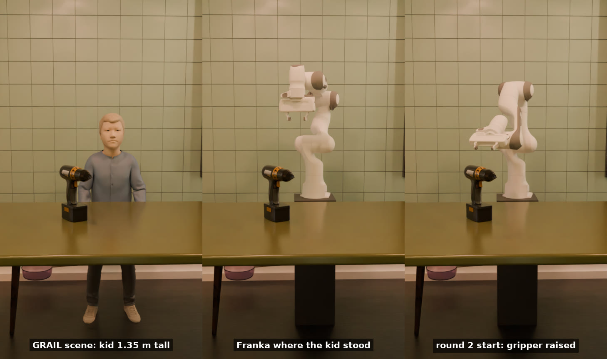

Step F12
A scene with known numbers
I render GRAIL's drill scene again from its saved settings, so the table, the drill, the camera and the person are known exactly. For the Franka versions I hide the person and put the arm where the person stood, on a stand that brings its base level with the table top, turned toward the drill. The first frame is all the video model gets: it is how the model is “told” the person's height and distance.
- Scene
- kid_indoor2-manipulation_rand00001, the same as step 1
- Table
- top 0.80 m above the floor
- Person
- 1.35 m tall, 0.15 m behind the table edge
- Franka
- where the person stood, base level with the table top
- Check
- new render identical to GRAIL's, pixel for pixel
What I learned: compared with the known numbers, GRAIL's reconstruction puts the drill 1.3 cm too high and the person 6.4 cm too far back. It also resizes every person to the G1's proportions, 1.32 m tall; the body tracker's own estimate for this kid was 1.80 m. The heights only agree here because the kid is about the G1's size.
